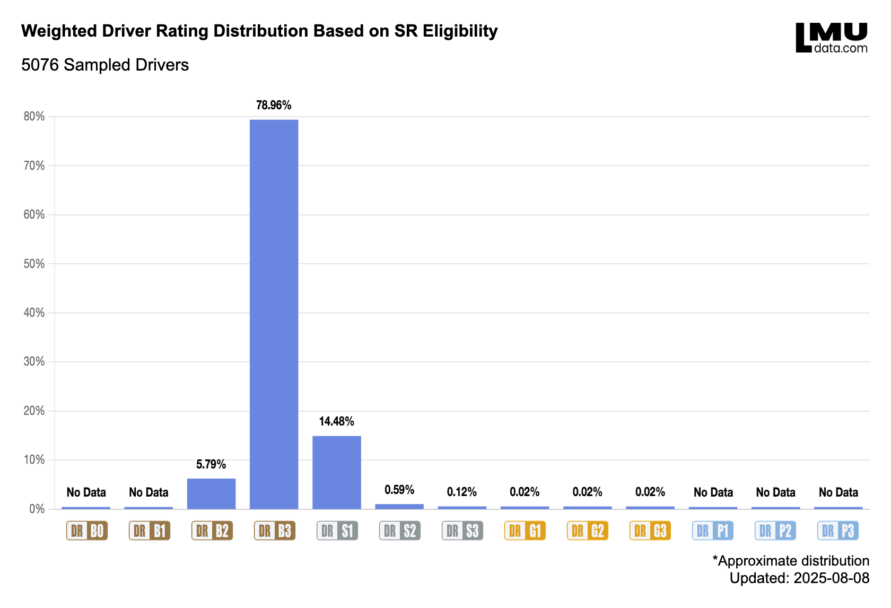
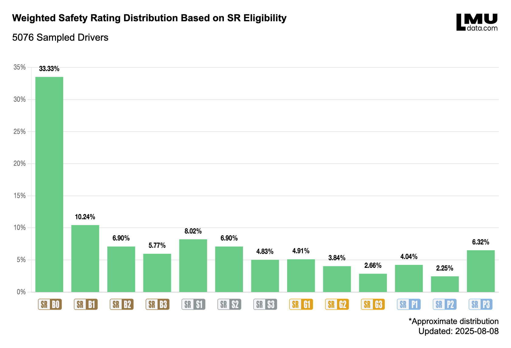

Le Mans Ultimate Rank Distribution
All data has been weighted because it depends on SR eligibility, meaning the numbers are influenced by how often beginner, intermediate, or advanced races are held. As of 08-08-2025, analysis has been conducted on 9 beginner events, 6 intermediate events, and 4 advanced events to account for the SR eligibility.
Driver Rating
This chart shows the weighted distribution of Driver Rating (DR) out of a sample of 5076 players, based on Safety Rating (SR) eligibility.
The biggest group by far is in B3, the starting rank for Driver Rating, with 78.96% (4008 drivers). Next is S1 with 14.48% (735 drivers) and B2 with 5.79% (294 drivers). Very few drivers are in S2 or S3, and almost none in the gold ranks (G1, G2, G3). Platinum ranks (P1, P2, P3) as well as B0 and B1 have zero players in this sample.
This shows that most players stay in the lower to middle DR ranks, with very few reaching the higher gold and platinum levels. Reasons could include:
- Starting rank: All new players begin at B3, so naturally more drivers are there.
- Ranking System: Rank progression is dependant on performance compared to other drivers.
- Skill plateau: Most drivers hit a limit before reaching gold or platinum.
- Casual play: Many players may not focus on improving their DR.
The sharp drop after B3 shows that while most players can keep their starting rank, few push higher. This makes the top ranks very exclusive, with a small group of highly competitive players.
Safety Rating
This chart shows the weighted distribution of Safety Rating (SR) out of a sample of 5076 players, based on Safety Rating (SR) eligibility.
Safety Rating (SR) focuses on clean driving, mainly avoiding track limit penalties but also avoiding accidents, and does not directly measure performance like DR does.
Here the largest group is at B0, the starting rank for SR, with 33.33% (1194 drivers). This shows that many players either stay in the starting rank for a long time or find it difficult to progress early on.
In most rank tiers, the biggest group is in the first rank of that tier (like B1, S1, or G1) when players first enter it. There are two exceptions: in Bronze, B0 has the most drivers because it’s the starting point, and in Platinum, P3 has the most drivers because it’s the final rank where players can’t go higher, so they stay there.
The spread of SR ranks is much wider than DR because it’s easier to progress. SR doesn’t depend on the skill of the people you race against, so players of all abilities can move through the ranks more freely. The wider spread than DR and the clusters could be explained by:
- Easier progression: SR gains are more generous than DR gains.
- SR eligibility: You mostly compete against similar SR players, which allow for an easier progression in higher ranks due to less incidents.
- Starting point: All new players start at B0 and move up from there — You can’t rank down in the starting tier.
Overall, both the DR and SR charts show that most players stay in their starting rank. However, SR is easier to increase because it doesn’t rely on your opponents’ skill level. DR gains and losses are balanced between all drivers in a race, meaning every DR percentage one player gains, another must lose, which makes moving up much harder.
iRating Comparison
This chart shows the distribution of Driver Rating (DR) compared to iRating based on percentiles. By comparing the DR distribution percentiles with the iRating percentile, a clear picture forms about how DR maps to iRating values.
The LMU distribution compared to iRating is not linear nor logarithmic, but follows a Bell-shaped distribution, where the lowest and highest ranks cover less iRating range, and the middle ranks cover more. Silver LMU ranks span between 1645 iR to 8468 iR, showing that progression in the middle area is broader and less tightly packed.
G1 covers the smallest iRating range of all, indicating it’s a narrow and competitive spot in the ranking system, with the exception of B1. At the other end, B1 covers such a small iRating range that it only accounts for approximately 7 iRating. B0, P1, P2, and P3 cannot yet be compared to iRating because no players have reached these ranks, most likely because of the age of LMU.
By ... this there is a few clear conclusions:
- Silver range: Silver LMU ranks occupy a larger iRating range.
- Smallest span: G1 has the smallest iRating span.
- Unbalanced distribution None of the platinum nor B0 has any coverage due to the age of LMU.
- Distribution Shape LMU-to-iRating mapping follows a Bell-shaped distribution.
In short, the iRating distribution backs up the LMU DR data. Most players plateau early, and only a small elite group climbs to the top.